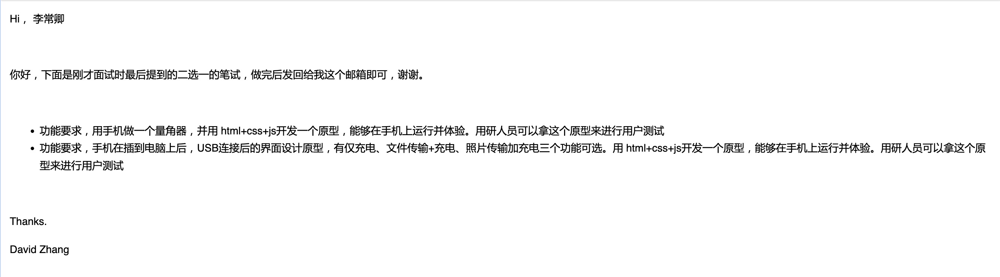

测试题-量角器项目链接
量角器figma原型
量角器-可滑动
量角器-终版-有摄像头
说明
基础原型到代码编写大概一上午的时间，现在提交的版本有两个问题我尝试了两个小时没有解决，我想先提交一版，然后继续完善。
原型图中的界面及量角器需要更多的时间去编写，如果需要我会优化成精细的量角器展示
问题一：在没有加入摄像头时，量角器指针可以滑动。加入摄像头背景时，量角器指针无法滑动。我正在检查解决这个问题。
问题二：在本地手机上运行html文件时，手机版chrome和edge不能获取摄像头，手机自带浏览器可以调用。当我更新到github时，都可以调用摄像头了。
原型及交互思路
原型中有很多功能按钮，这些功能是作为测量工具比较常用的功能，我在原型中有描述。
测量时滑动指针的长度一定要充满屏幕，这样有利于用户更好的测量。
以下代码编写过程中的测试，不重要
调用摄像头
量角器1
量角器2
USB连接
USB连接后的界面设计原型
USB连接我有些技术不太了解
手机检测到连接电脑,然后弹出弹窗，我不了解这个是怎么检测出来的，我不会实现这一步。
还有手机中的下拉通知，我暂时也不知道如何实现。
如果只做这个界面的纯交互相对好做一些